We set two indexes, i and j, i to indicate the start of slide window, and j for end. First we move j to the right, once we find a duplicated value, we stop, and calculate the length. Then, we move i to right to remove the first duplicated value. We also use a dict to store where we store the value.
# O(kn) defsolution(a): i, j = 0, 0 indice = {} ret = 0 while j < len(a): if a[j] in indice: i = indice[a[j]] # reconstruct the indice map indice = {a[k]: k for k inrange(i+1, j+1)} else: # only add the current element indice[a[j]] = j ret = max(ret, len(indice)) j += 1 return ret
# O(n) defsolution2(a): i, j = 0, 0 indice = {} ret = 0 while j < len(a): if a[j] in indice: # once we find a duplicate key # then valid path must be the length between these two key minus 1 i = max(indice[a[j]], i) ret = max(ret, j-i+1) indice[a[j]] = j+1 j += 1 return ret
We use i and j to divide the list A and B. Once we reach following conditions, we can get the median. - len(left_part)=len(right_part) - max(left_part)≤min(right_part) - median = (max(left_part) + min(right_part)) / 2
We can simplify the condition to: - B[j−1]≤A[i] and A[i−1]≤B[j] - j=(m+n+1)/2-i
We do binary search to find the i: - if B[j−1]≤A[i] and A[i−1]≤B[j], we found the median - if B[j−1]>A[i], we need to increase i using binary search - if A[i−1]>B[j], we need to decrease i using binary search
Note: - imin, imax, half_len = 0, m, (m+n+1)//2 - i = (imin+imax)//2, j = half_len – i - if i < m and nums2[j-1] > nums1[i]: imin = i + 1 # binary search - elif i > 0 and nums1[i-1] > nums2[j]: imax = i - 1 # binary search
defsolution(nums1, nums2): m, n = len(nums1), len(nums2) if m > n: nums1, nums2, m, n = nums2, nums1, n, m imin, imax, half_len = 0, m, (m + n + 1) // 2 while imin <= imax: i = (imin + imax) // 2 j = half_len - i if i > 0and nums1[i - 1] > nums2[j]: imax = i - 1 elif i < m and nums1[i] < nums2[j - 1]: imin = i + 1 else: if i == 0: max_of_left = nums2[j - 1] elif j == 0: max_of_left = nums1[i - 1] else: max_of_left = max(nums1[i - 1], nums2[j - 1])
if (m + n) % 2 == 1: return max_of_left
if i == m: min_of_right = nums2[j] elif j == n: min_of_right = nums1[i] else: min_of_right = min(nums1[i], nums2[j])
return (max_of_left + min_of_right) / 2.
longestPalindrome (dp) O(N^2)
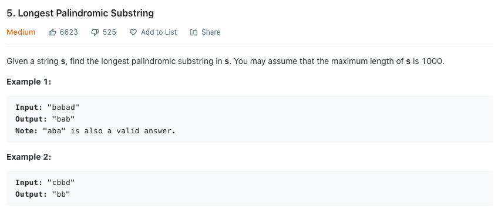
We set two indexes,’i’ and ‘j’, i to indicate the length of slide window, j to indicate the start of slide window, the dp formular is:
P(i, j) = P(i+1, j-1) + 2, if s[i] == s[j].
Note:
P(i, i) = 1
since ‘aa’ is also palindrome, so for P(i, i+1) = 2 if s[i] = s[i+1]
# O(n^2) defsolution(s): n = len(s) dp = [[0] * n for i inrange(n+1)] ret = "" max_len = 0 # i is the length, j is the start position for i inrange(1, len(s)+1): for j inrange(len(s)-i+1): # case 1, single char if i == 1: dp[i][j] = 1 # case 2, continuous smae char elif i == 2: if s[j] == s[j+1]: dp[i][j] = 2 else: if dp[i-2][j+1] > 0and s[j] == s[j+i-1]: dp[i][j] = dp[i-2][j+1] + 2 if dp[i][j] > max_len: max_len = dp[i][j] ret = s[j:j+i] return ret
isMatch (recursive with memo) O(MN)
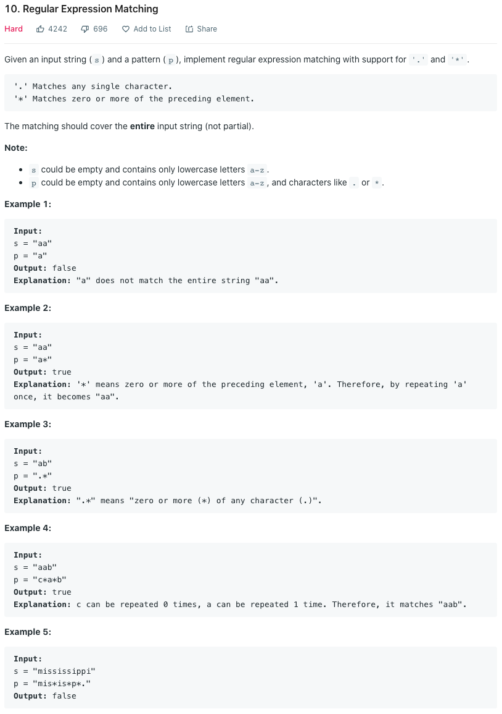
We can add memory to avoid repeated check.
1 2 3 4 5 6 7 8 9 10 11 12 13 14 15 16 17 18 19
defsolution(s, p): memo = {} m, n = len(s), len(p)
defrecursive(i, j): if (i, j) notin memo: if j == n: ans = i == m else: first_match = i < m and p[j] in (s[i], '.') if j + 1 < n and p[j + 1] == '*': ans = recursive( i, j + 2) or first_match and recursive(i + 1, j) else: ans = first_match and recursive(i + 1, j + 1) memo[i, j] = ans return memo[i, j]
return recursive(0, 0)
maxArea (trick) O(n)
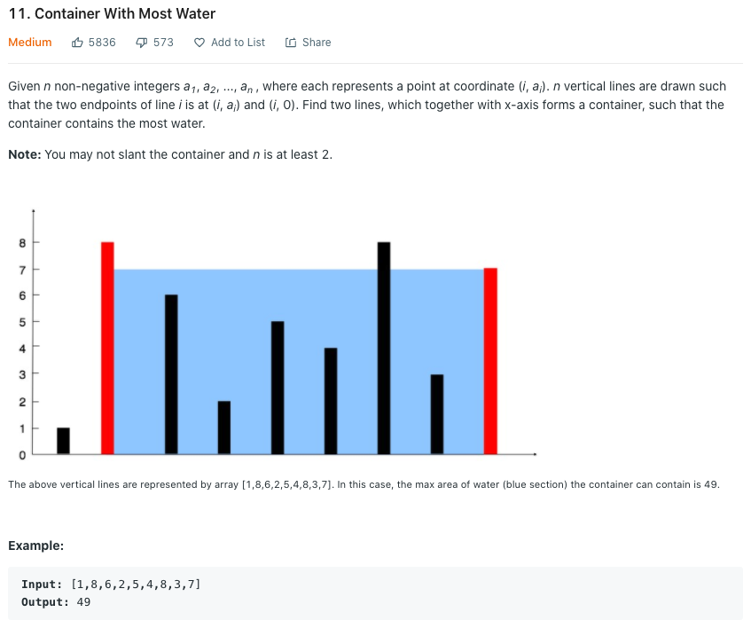
We set i = 0, and j = len(heights), each time, we move the shorter height to find a higher height, and recalculate the max area. Beceuase if the next height is shorter than current height, it also has a short length on x-axis, it cannot have a larger volumn.
Note: we cannot use dp, since this problem doesn’t have the optimal sub-structure.
This trick works, because we fasten the i and j from the outside to inside, the width will decrease, only if the height increase, there may exist a larger area. And why we move the shorter height, because, if we fix the shorter height, and move the higher height, the min height still is the shorter height, the max area will only decrease with the width.
1 2 3 4 5 6 7 8 9 10 11
# O(n) defsolution(height): i, j = 0, len(height) - 1 ret = min(height[j], height[i]) * (j-i) while i < j: ret = max(ret, min(height[i], height[j]) * (j-i)) if height[i] < height[j]: i += 1 else: j -= 1 return ret
(mark) threeSum (trick) O(n^2)
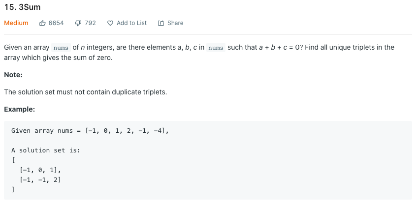
We firstly sort the array, and then set three indexes, the first one is i, after we fix the i, we set j at the i+1, and k at the n-1, then we want the sum(s[j], s[k]) is -s[i], if the sum is less, we move the j=j+1, else if the sum is larger, we move the k=k-1(since the array is sorted).
# O(n^2) sort defsolution(nums): n = len(nums) nums.sort() ret = [] for i inrange(n-2): if i > 0and nums[i] == nums[i-1]: # avoid repeat continue j, k = i+1, n-1 while j < k: s = nums[i] + nums[j] + nums[k] if s < 0: j += 1 elif s > 0: k -= 1 else: ret.append([nums[i], nums[j], nums[k]]) while j < k and nums[j] == nums[j+1]: # avoid repeat j += 1 while j < k and nums[k] == nums[k-1]: # avoid repeat k -= 1 j += 1 k -= 1 return ret
defsolution(digits): ret = [] ifnot digits: return ret
defrecursion(prefix, digits): ifnot digits: ret.append(prefix) else: for c in phone[digits[0]]: recursion(prefix+c, digits[1:]) recursion("", digits) return ret
removeNthFromEnd (trick) O(n)
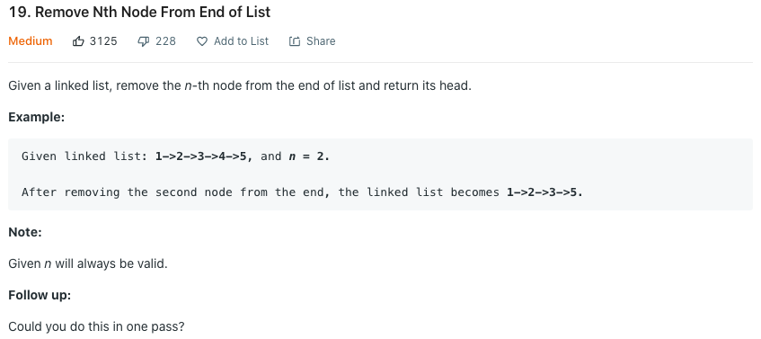
We use two indexes, I and j, and we let the I firstly move forward n steps, and then we move these two indexes together, once the I reach the end, the j is at last n-th node.
1 2 3 4 5 6 7 8 9 10 11 12
defsolution(head, n): t = ListNode(None) t.next = head p = t q = t for _ inrange(n): p = p.next while p.next: q = q.next p = p.next q.next = q.next.next return t.next
generateParenthesis (recursive) O(4^n/√2)
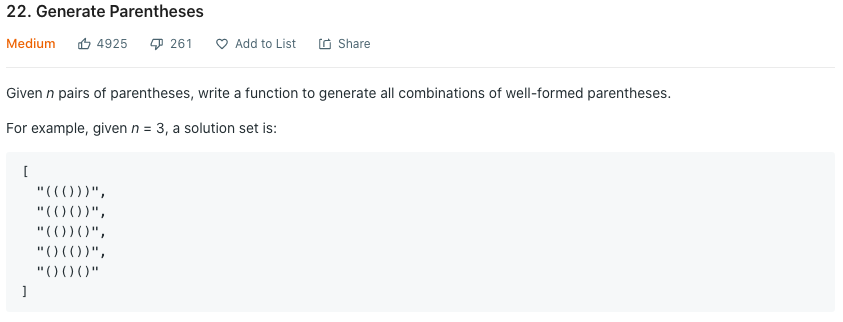
We use a count n to record the remaining available left parentheses, and another count k to record the assigned left parentheses. - if n == 0 and k == 0, output - If n == 0 and k>0, recursive(n, k-1), add ‘)’ - If n > 0 and k == 0, recursive(n-1, k+1), add ‘(’ - else we should try two directions: recursive(n-1, k+1), add ‘(’, and recursive(n, k-1), add ‘)’
defrecursion(prefix, i, j): # i means the assigned number of "(" and don't have ")" # j means the available number of "(" if i==0and j == 0: ret.append(prefix) elif i == 0: recursion(prefix+"(", i+1, j-1) elif j == 0: recursion(prefix+")", i-1, j) else: recursion(prefix+"(", i+1, j-1) recursion(prefix+")", i-1, j)
recursion("", 0, n) return ret
nextPermutation (trick), O(n)
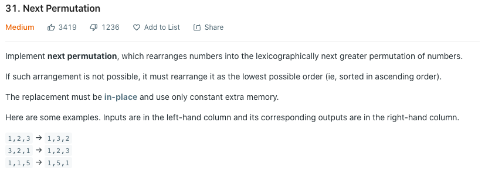
We set j=len(n)-1, and set i=len(n)-2, we search the i from end to start, once we found n[i] < n[j], we swop n[i] and n[j], then we reverse n[i:j+1]
Note, from the last value, once we find a smaller value, we reverse all values between these two values.
1 2 3 4 5 6 7 8 9 10 11 12 13
defsolution(nums): n = len(nums) i = n - 2 while i >= 0and nums[i + 1] <= nums[i]: i -= 1 if i >= 0: j = n - 1 while j >= 0and nums[j] <= nums[i]: j -= 1 nums[i], nums[j] = nums[j], nums[i] nums[i + 1:] = nums[:i:-1] else: nums[::] = nums[::-1]
longestValidParentheses
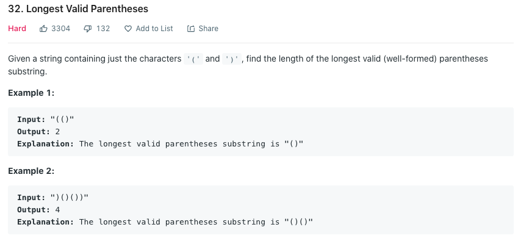
longestValidParentheses (stack trick) O(n)
The idea behind this problem is, when we find a ‘)’ (stack is not empty), we need to check where does this start. So we record the position in the stack.
Once we encounter an invalid char(still need pop), or we has a ‘(’ now, we push its position into the stack, after that, when we encounter a “)”, we firstly pop a value from the stack, then we can always found the start point of the valid sub-path at the stack[-1].
# dp O(n) defsolution(s): max_ret = 0 stack = [-1] for i inrange(len(s)): if s[i] == '(': stack.append(i) else: stack.pop() iflen(stack) == 0: stack.append(i) # last invalid point else: max_ret = max(max_ret, i - stack[-1]) # i-stack[-1] is current valid length return max_ret
# dp O(n) defsolution(s): ret = 0 dp = [0] * len(s) for i inrange(1, len(s)): if s[i] == ")": if s[i - 1] == "(": dp[i] = (dp[i - 2] if i > 1else0) + 2 elif i - dp[i - 1] > 0and s[i - dp[i - 1] - 1] == "(": dp[i] = dp[i-1] + 2 + \ (dp[i-dp[i-1]-2] if i-dp[i-1]-2 > 0else0) ret = max(ret, dp[i]) return ret
(mark) longestValidParentheses (dp) O(n)
the i-th element of dp arary indicates the length of the longest valid substring ending at i-th index. And because the valid substing always ends with ‘)’, we will have: - s[i-1,i] = ‘()’, dp[i] = dp[i-2]+2, (dp[i-1]=0) - s[i-1,i] = ‘))’, we need to check s[i-dp[i-1]-1], the last char before the longest substring ending at [i-1] whether is ‘(’, if it is, dp[i] = dp[i-1] + dp[i-dp[i-1]-2]+2, the longest substing a [i-1] + substring before last valid substring + 2.
1 2 3 4 5 6 7 8 9 10 11 12 13 14
# dp O(n) defsolution(s): ret = 0 dp = [0] * len(s) for i inrange(1, len(s)): if s[i] == ")": print(s[i], i, dp[i-1]) if s[i-1] == "(": dp[i] = (dp[i-2] if i > 1else0) + 2 elif i-dp[i-1] > 0and s[i-dp[i-1]-1] == "(": dp[i] = dp[i-1] + 2 + \ (dp[i-dp[i-1]-2] if i-dp[i-1]-2 > 0else0) ret = max(ret, dp[i]) return ret
(mark) search (binary search trick) O(log n)
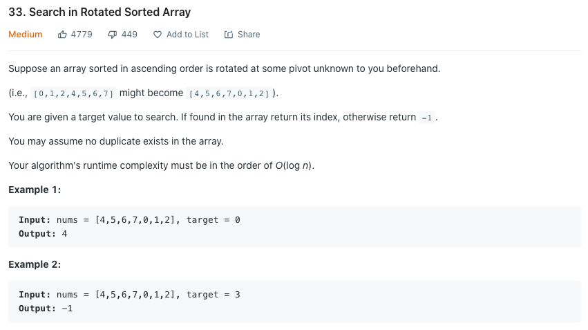
For example, we take [4, 5, 6, 7, 0, 1, 2] as input, and s=0, e=n-1, m=(s+e)//2
We make these four assumptions: - the axis locates at right, and target is at left: nums[s] <= target < nums[m] -> recursive(s, m-1) - the axis locates at left, and target is at right: nums[m] < target <= nums[e] -> recursive(s+1, m) - the axis locates at right, and target is at right: nums[m] > nums[e] -> recursive(m+1, e) - the axis locates at left, and target is at left: nums[s] > nums[m] -> recursive(s, m-1)
For third case, there is a hidden condition, , if nums[m] > nums[e], this means the axis locates at right, so the nums[s] must be less than nums[m], at this condition, we only need to check the target if it locates at the right, since if the target locates at left, this case will be the first case. The same idea for fourth case.
Besides, the recursion doesn’t break the rules of rotated list.
defrecursion(i, j): if j < i: return -1 m = (i+j)//2 if nums[m] == target: return m # target locates at non-axis side (and is left side) elif nums[i] <= target < nums[m]: return recursion(i, m-1) # target locates at non-axis side (and is right side) elif nums[m] < target <= nums[j]: return recursion(m+1, j) # target locates at axis side (and is right side) elif nums[m] > nums[j]: return recursion(m+1, j) # target locates at axis side (and is left side) else: return recursion(i, m-1) return recursion(0, len(nums)-1)
searchRange (Binary Search trick) O(log n)
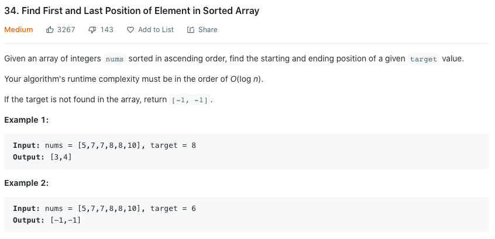
we use two binary search, one search the left boundary and another for the right boundary.
We modify the original binary search, make it to continue search when we found the target value. Also, once right_index <left_index, we return left_index for the left boundary search, and return right_index for the right one.
defsolution(nums, target): defrecursiveLeft(s, e): if e < s: return s m = (s+e)//2 if nums[m] < target: return recursiveLeft(m+1, e) else: return recursiveLeft(s, m-1)
defrecursiveRight(s, e): if e < s: return e m = (s+e)//2 if nums[m] <= target: return recursiveRight(m+1, e) else: return recursiveRight(s, m-1)
left, right = recursiveLeft(0, len(nums)-1), recursiveRight(0, len(nums)-1) # once we cannot found the value, the left will right-1 return [left, right] if left <= right else [-1, -1]
combinationSum (dfs) O(exponential)
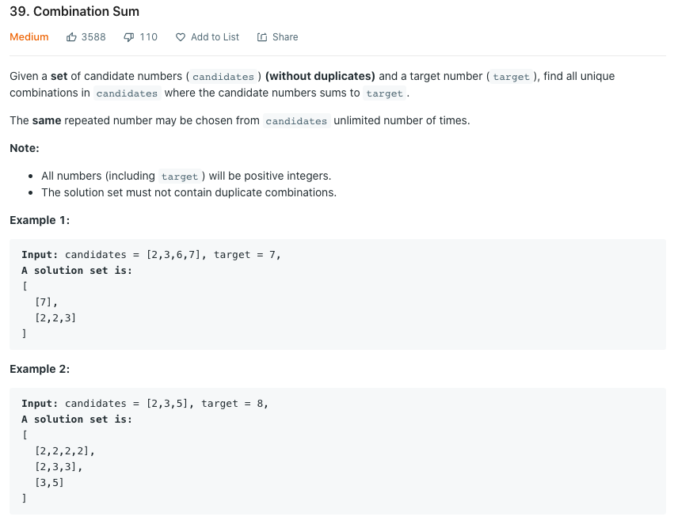
just add a loop to call the recursion function.
1 2 3 4 5 6 7 8 9 10 11 12
defsolution(candidates, target): ret = []
defrecursion(prefix, i, target): if target == 0: ret.append(prefix) for i inrange(i, len(candidates)): num = candidates[i] if target - num >= 0: recursion(prefix+[num], i, target-num) recursion([], 0, target) return ret
firstMissingPositive (trick: hash with mod position) O(n)
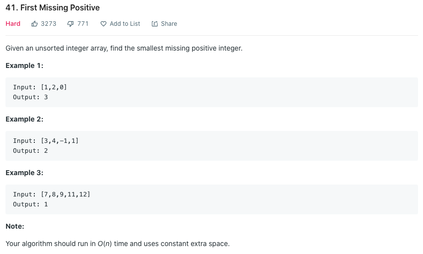
The biggest challenge is, we can only use extra constant space which means we cannot set up a hash table with O(n) space. So the solution use the input array as the has table.
Using: nums[nums[i] % n] += n(first to handle all <0 or >=n to 0), this to mark a bin has been covered, after iterating all values, we can check the value which less than n, the first value we found is the final result.
1 2 3 4 5 6 7 8 9 10 11 12 13
defsolution(nums): nums.append(0) # very important, for example, [1] n = len(nums) for i inrange(n): # delete those useless elements if nums[i] < 0or nums[i] >= n: nums[i] = 0 # use the index as the hash to record the frequency of each number for i inrange(n): nums[nums[i] % n] += n # +n and %n to make the original value do not be overlaped for i inrange(1, n): if nums[i] < n: return i return n
Trap (two dp, left and right) O(n)
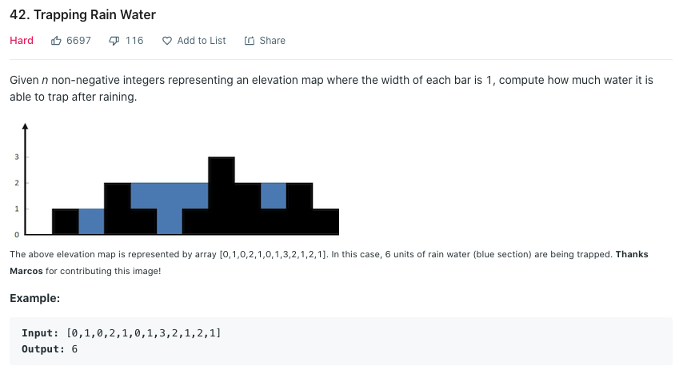
We use two dp, to record both max heights from left and right respectively. - dp_l[i] = max(dp_l[i-1], height[i]) - dp_r[i] = max(dp_r[i+1], height[i])
Then, each bin’s water volume is: min(dp_l[i], dp_r[i]) - height[i].
1 2 3 4 5 6 7 8 9 10 11 12 13 14 15 16
defsolution(height): height = [0] + height + [0] n = len(height) ret = 0 max_left = [0] * n # record the max height from left max_right = [0] * n # record the max height from right cur_max = height[0] for i inrange(n): cur_max = max(cur_max, height[i]) max_left[i] = cur_max cur_max = height[-1] for i inrange(n-1, -1, -1): cur_max = max(cur_max, height[i]) max_right[i] = cur_max ret += min(max_left[i], max_right[i]) - height[i] return ret
Permute (loop call recusive) O(2^n)
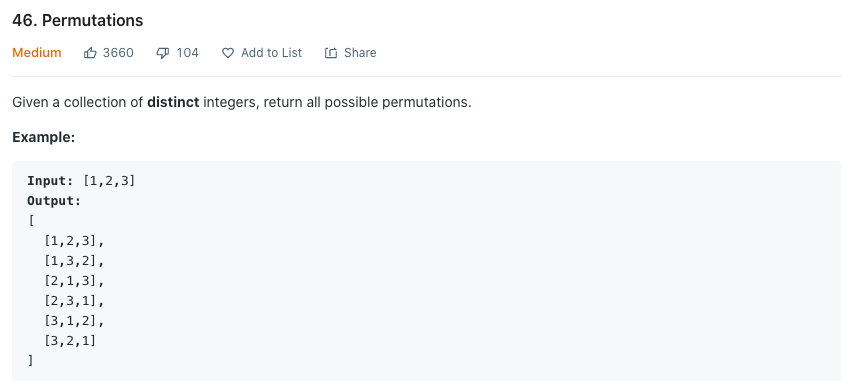
1 2 3 4 5 6 7 8 9 10 11 12
defsolution(nums): ret = [] n = len(nums)
defrecursion(prefix, remaining): ifnot remaining: ret.append(prefix) else: for k inrange(len(remaining)): recursion(prefix+[remaining[k]], remaining[:k] + remaining[k+1:]) recursion([], nums) return ret
Rotate (trick) O(n^2)
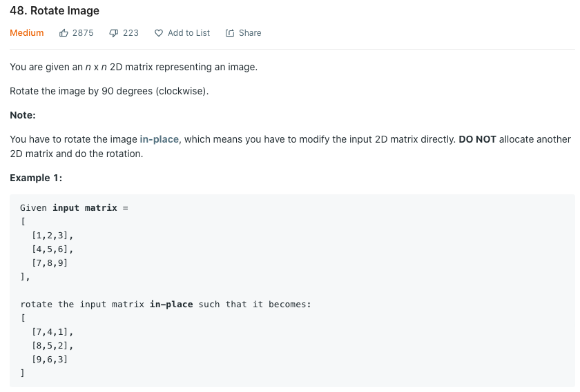
First reverse and then transpose
1 2 3 4 5 6 7 8 9 10 11 12
defsolution(matrix): n = len(matrix) i, j = 0, n - 1 # swap while i < j: matrix[i], matrix[j] = matrix[j], matrix[i] i += 1 j -= 1 # transpose for i inrange(n): for j inrange(i, n): matrix[i][j], matrix[j][i] = matrix[j][i], matrix[i][j]
(mark) groupAnagrams (hash) O(m)
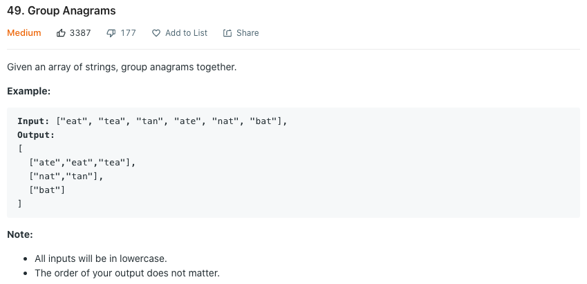
using collections.defaultdict(list), take the tuple(sorted(s)) as the key of hash table.
1 2 3 4 5 6 7
from collections import defaultdict
defsolution(strs): ret = defaultdict(list) for s in strs: ret[tuple(sorted(s))].append(s) returnlist(ret.values())
** sorted(s) is ok but set(s) cannot.
(mark) maxSubArray (trick) O(n)
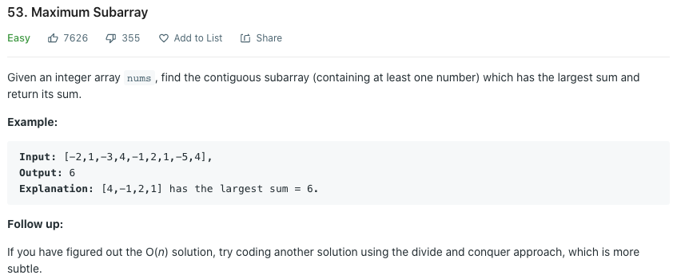
We scan the array from the left to right, we use a list to record the accumulated sum, only if the left sum is positive, we use it, otherwise, this negative value should be discarded.
So the sum is: nums[i] = max(0, nums[i-1]) + nums[i]
For each continue positve sub-list, we compare to record the maximum sum: ret = max(ret, nums[i]).
1 2 3 4 5 6 7
defsolution(nums): cur_sum = 0 max_v = - sys.maxsize for num in nums: cur_sum = max(0, cur_sum) + num max_v = max(max_v, cur_sum) return max_v
canJump (greedy) O(n)
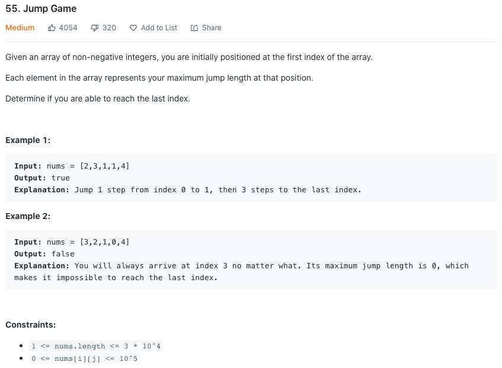
We scan the list from the left to right up to the farest value we can reach, each time once we get a new value, we modify the farest value, so if we can attend the final position, return true, otherwise return false.
1 2 3 4 5 6 7 8 9 10 11 12 13 14
defsolution(nums): m = 0 for i inrange(0, len(nums)): if i > m: returnFalse m = max(m, i+nums[i]) returnTrue
defsolution(nums): i, max_i = 0, 0 while i <= max_i and i < len(nums) and max_i < len(nums)-1: max_i = max(max_i, i+nums[i]) i += 1 return max_i >= len(nums) - 1
merge (greedy) O(n)
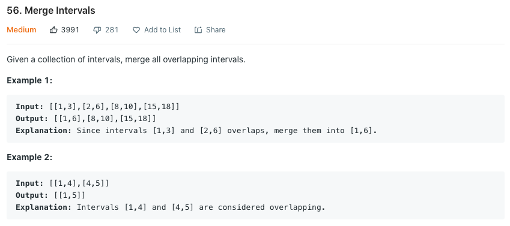
We firstly sort the input, then using a list, add the first tuple into the list, each time check whether the last tuple’s right value is larger than the second tuple’s first value, if yes, we merge this two, else only insert the tuple into the list.
defsolution(intervals): intervals.sort(key=lambda x: x[0]) merged = [] for interval in intervals: ifnot merged or merged[-1][1] < interval[0]: merged.append(interval) else: merged[-1][1] = max(merged[-1][1], interval[1])
return merged
defsolution(intervals): intervals.sort(key=lambda x: x[0]) ret = [] while intervals: interval_1 = intervals.pop(0) if intervals and interval_1[1] >= intervals[0][0]: intervals[0][0] = interval_1[0] intervals[0][1] = max(intervals[0][1], interval_1[1]) else: ret.append(interval_1) return ret
uniquePaths (dp) O(m+n)
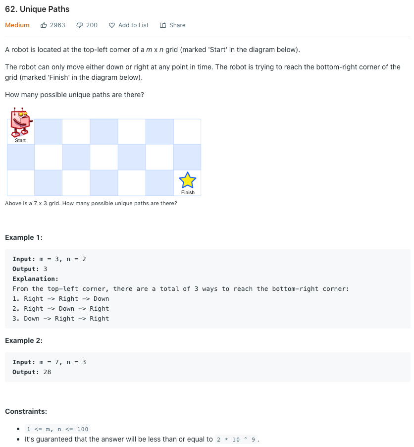
dp[i][j] = dp[i][j-1] + dp[i-1][j]
1 2 3 4 5 6 7 8 9 10
defsolution(m, n): dp = [[0] * n for _ inrange(m)] for i inrange(m): dp[i][0] = 1 for j inrange(n): dp[0][j] = 1 for i inrange(1, m): for j inrange(1, n): dp[i][j] = dp[i][j-1] + dp[i-1][j] return dp[-1][-1]
minPathSum (dp) O(mn)
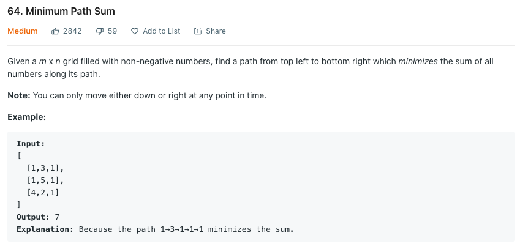
dp[i][j] = min(dp[i][j-1], dp[i-1][j]) + m[i][j]
1 2 3 4 5 6 7 8 9 10 11 12
defsolution(grid): m, n = len(grid), len(grid[0]) dp = [[0]*n for _ inrange(m)] dp[0][0] = grid[0][0] for i inrange(1, m): dp[i][0] = dp[i-1][0] + grid[i][0] for j inrange(1, n): dp[0][j] = dp[0][j-1] + grid[0][j] for i inrange(1, m): for j inrange(1, n): dp[i][j] = min(dp[i-1][j], dp[i][j-1]) + grid[i][j] return dp[-1][-1]
climbStairs (dp) O(n)
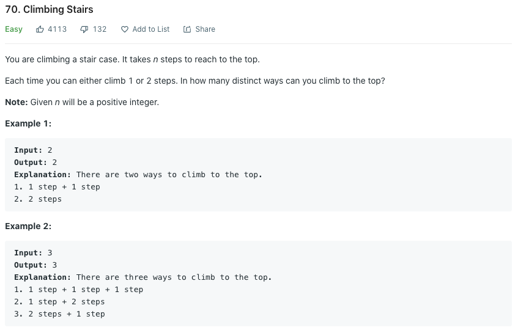
dp[i] = dp[i-1] + dp[i-2], dp[0]=1, dp[1] = 1
1 2 3 4 5 6 7 8 9
defsolution(n): if n == 1: return1 dp = [0] * n dp[0], dp[1] = 1, 2 for i inrange(2, n): dp[i] = dp[i-1] + dp[i-2]
return dp[-1]
(mark) minDistance (dc) O(mn)
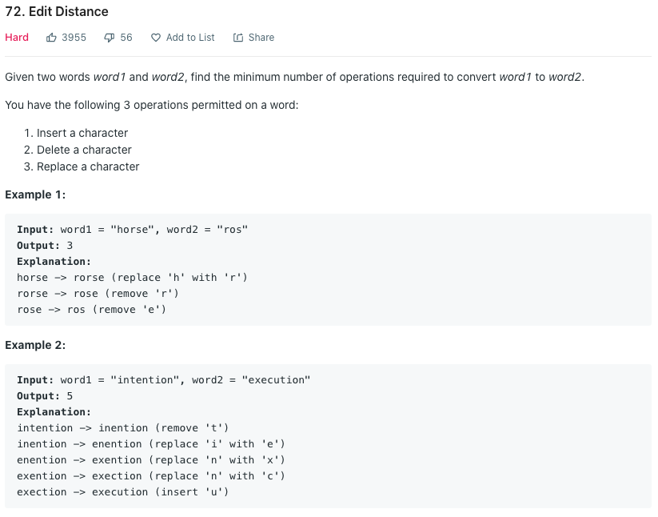
We define a recursive function: recursive(word1, word2, i, j, memo), which returns the amount of operations for word1[i:] and word2[j:], and we use memo to record the sub-problem.
For the word1[i] and word2[j], if they are equal, we make memo[i][j] = recursive(word1, word2, i+1, j+1, memo). Else, we define these three operations: - insert = 1 + recursive(word1, word2, i, j+1, memo), we insert word2[j] before word1[i], so they are eaqual, then we compare word1[i] with word2[j+1]. - delete = 1 + recursive(word1, word2, i+1, j, memo), we delete word2[j], then we compare word1[i+1] with word2[j]. - replace = 1 + recursive(word1, word2, i+1, j+1, memo), we replace word1[i] with word2[j], so they are equal, so we continue to compare word1[i+1] with word2[j+1].
and make memo[i][j] = min(insert, delete, replace).
For the termination of the recursion, when i=m, j=n, it means we’ve handled all words, so return 0, else, when i=m, we return n-j, when i=n, we return m-i, since if we’ve already handled one word, we only need to insert the remaining chars in another word.
defsolution(word1, word2): memo = {} n, m = len(word1), len(word2) if m < n: word1, word2, m, n = word2, word1, n, m
defrecursive(i, j): if (i, j) notin memo: if i == n: ans = m - j elif j == m: ans = n - i else: if word1[i] == word2[j]: ans = recursive(i + 1, j + 1) else: # insert, delete, replace ans = min(recursive(i, j + 1), recursive(i + 1, j), recursive(i + 1, j + 1)) + 1 memo[i, j] = ans return memo[i, j]
return recursive(0, 0)
sortColors (trick) O(n)
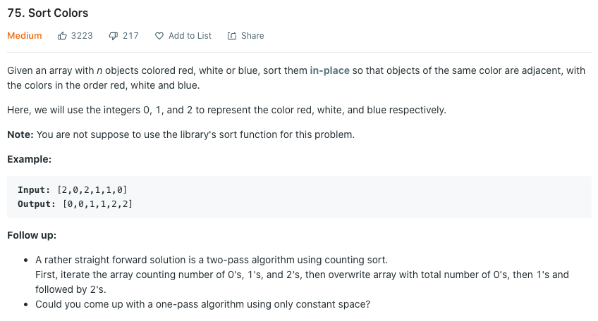
We use three indexes, i, j, k, the i and j indicate the range that we need to handle, and k indicates the value we are handling. For the nums[k], there are three cases: - nums[k] == 0, we swap nums[i] and nums[k], then i+=1, k+=1. - nums[k] == 1, do nothing, just k+=1 - nums[k] == 2, we swap nums[j] and nums[k], then j-=1.
Actually, the i indicates the end of “0” values, the j for start of “2” values, each time, we encounter a “0”, we swap it to the end of “0” values, and for “2” values, we swap it to the start of “2” values, so at final, the middle are all “1” values.
1 2 3 4 5 6 7 8 9 10 11 12 13 14 15 16 17
defsolution(nums): n = len(nums) i, j, k = 0, 0, n-1 while i <= k: if nums[i] == 0: if i != j: nums[i], nums[j] = nums[j], nums[i] j += 1 else: j += 1 i += 1 elif nums[i] == 2: nums[i], nums[k] = nums[k], nums[i] k -= 1 else: i += 1 return nums
minWindow (trick hash) O(n)
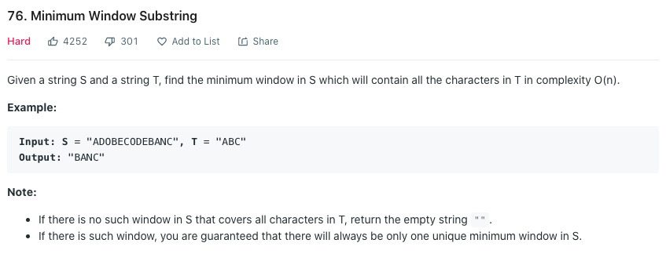
We use two indexes i and j to indicate the start and end of the slide window. We also use a hash table to count amout of each char in T. The hash tbale m looks like a balance wallet, we first add chars of T into it, then once we encounter chars in S, we minus from m. So for m>0 means there is still char we need to find, and m<0 means we remove much more than we need in T. We also use a count=len(T) to identify whether we have encounter all chars within T. First, we move the i to right, and we minus one from hash table m[s[i]], and we only minus one from count if we found m[s[i]]>0(means we remove a target char), which means there are still uncount chars within T(because we may encounter several same chars, so the m[s[i]] could be negative, but for that time, we won’t minus from count). Once count equals to zero, we move j to right, each time we add one to m[s[i]], and we add one to count if we found m[s[i]]>0, which means there are still uncount chars within T again.
defminWindow(self, s, t): """ :type s: str :type t: str :rtype: str """ import sys import collections m = collections.defaultdict(int) # m just like a balance wallet # we first add chars of T into it # then once we encounter chars in S # we minus from m # so for m>0 menas there is still char we need to find # m<0 means we remove much more than we need in T for c in t: m[c] += 1 j = 0
# identify how many remaining chars in T we still need to find count = len(t) minLen = sys.maxsize minStart = 0 for i inrange(len(s)): # only when m[s[i]] > 0, means remaining chars in t if m[s[i]] > 0: count -= 1 m[s[i]] -= 1 # we have found all chars in T, we start to move j while count == 0: if (i - j + 1) < minLen: minLen = i-j+1 minStart = j m[s[j]] += 1 # when m[s[i]] > 0, means we remove too much target chars # we increase count to mark there are chars we need to find if m[s[j]] > 0: count += 1 j += 1
if minLen < sys.maxsize: return s[minStart:minStart+minLen] return""
defsolution(s, t): from collections import Counter import sys
n = len(s) i, j = 0, 0 c_t = Counter(t) count = len(t) b, l = 0, sys.maxsize while j < n: if c_t[s[j]] > 0: count -= 1 c_t[s[j]] -= 1
whilenot count: if (j-i+1) < l: l = j-i+1 b = i c_t[s[i]] += 1 if c_t[s[i]] > 0: count += 1 i += 1 j += 1 if l < sys.maxsize: return s[b:b+l] return""
Subsets (dfs) O(2^n)
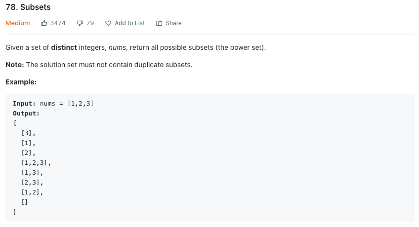
Same with permutation, but also output at intermediate nodes.
1 2 3 4 5 6 7 8 9 10
defsolution(nums): n = len(nums) ret = []
defrecursion(prefix, i): ret.append(prefix) for j inrange(i, n): recursion(prefix+[nums[j]], j+1) recursion([], 0) return ret
(mark) Exist (dfs) O(mn * len(words))
We dedine a recursive function: dfs(row, col, idx), means from nums[row][col] starts finding word[idx:]. We iterative all cells, and only call dfs from the cell which equals to word[0].
Within the recursive function. If idx == len(word), return True, else we check four directions, if it equals to word[idx], we call recursive func, if all fail, return false.
defsolution(board, word): m, n = len(board), len(board[0])
defrecursion(i, j, idx): if idx == len(word): returnTrue board[i][j] = "#" if i+1 < m and board[i+1][j] == word[idx] and recursion(i+1, j, idx+1): returnTrue if j+1 < n and board[i][j+1] == word[idx] and recursion(i, j+1, idx+1): returnTrue if i-1 >= 0and board[i-1][j] == word[idx] and recursion(i-1, j, idx+1): returnTrue if j-1 >= 0and board[i][j-1] == word[idx] and recursion(i, j-1, idx+1): returnTrue board[i][j] = word[idx-1] returnFalse
for i inrange(m): for j inrange(n): if board[i][j] == word[0] and recursion(i, j, 1): returnTrue returnFalse
largestRectangleArea (left and right dp) O(n)
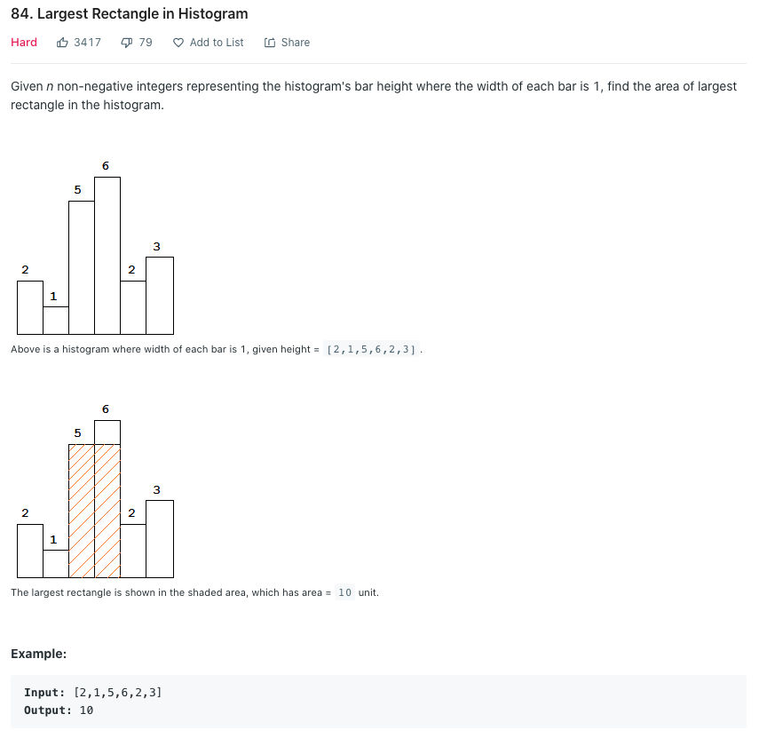
We use two array, left_min and right_min to record the position of first smaller value from left and right, so each rectangle’s area is: height[i] * (right_min[i] - left_min[i] -1)
We set left_min[0]=-1, for left_min[i], we search from j=i-1, each time we found height[j] >= height[i], we set j=left_min[j] to recursively find the first smaller value.
1 2 3 4 5 6 7 8 9 10 11 12 13 14 15 16 17 18 19
defsolution(heights): heights = [0] + heights + [0] n = len(heights) min_left = [0] * n min_right = [0] * n ret = 0 for i inrange(1, n - 1): tmp_i = i - 1 while tmp_i > 0and heights[tmp_i] >= heights[i]: tmp_i = min_left[tmp_i] min_left[i] = tmp_i for j inrange(n - 2, 0, -1): tmp_j = j + 1 while tmp_j < n - 1and heights[tmp_j] >= heights[j]: tmp_j = min_right[tmp_j] min_right[j] = tmp_j for i inrange(1, n - 1): ret = max(ret, heights[i] * (min_right[i] - min_left[i] - 1)) return ret
maximalRectangle (greedy) O(mn)
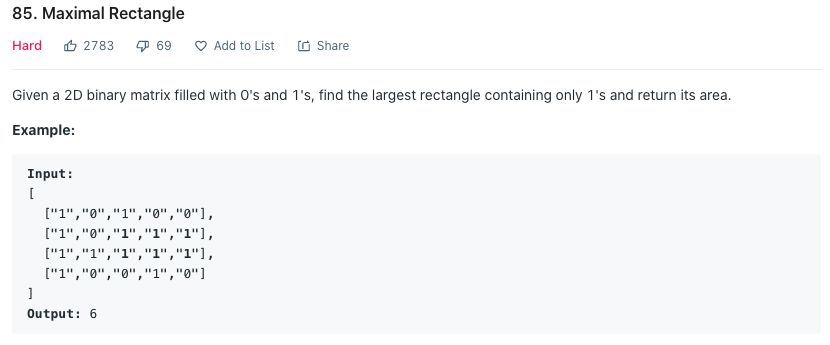
We use three arrays to record the most far height, left boundary and right boundary.
For height: - if matrix[i][j] == ‘1’: height[j] += 1, else height[j] = 0
For left: - if matrix[i][j] == ‘1’: left[j] = max(left[j], cur_left), else left[j] = 0, cur_left = j+1
For right: - if matrix[i][j] == ‘1’: right[j] = min(right[j], cur_right), else right[j] = n, cur_right = j.
The precess is, firstly we determine the height of the rectangle, then we find the most far left boundary and right boundary of this rectangle. We use cur_left to record the far left boundary of this line, and left[j] to record the far boundary of all lines, so max(left[j], cur_left) gives us the most far left boundary of the rectangle in this line.
defsolution(matrix): ifnot matrix: return0 m, n = len(matrix), len(matrix[0]) left, right, height = [0] * n, [n] * n, [0] * n max_v = 0 for i inrange(m): cur_left, cur_right = 0, n for j inrange(n): if matrix[i][j] == '1': height[j] += 1 left[j] = max(left[j], cur_left) else: height[j] = 0 left[j] = 0 cur_left = j + 1 j = n - j - 1 if matrix[i][j] == '1': right[j] = min(right[j], cur_right) else: right[j] = n cur_right = j for j inrange(n): max_v = max(max_v, (right[j] - left[j]) * height[j]) return max_v
inorderTraversal (iterative) O(n)
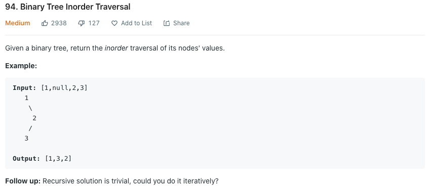
using a stack, each time pop a node, and push its children into the stack by this tuple (node.left, node.val, node.right), each time we found a value, we output it.
Another way: we firstly loop to push left node into the stack up to the most left leaf, each time we pop a node, ouput it, and add its left node recursively again.
defrecursion(root): ifnot root: return recursion(root.left) ret.append(root.val) recursion(root.right) recursion(root) return ret
defsolution(root): ret = [] stack = [root] while stack: node = stack.pop() ifnot node: continue elifisinstance(node, int): ret.append(node) else: stack.extend([node.right, node.val, node.left]) return ret
numTrees (dp) O(n^2)
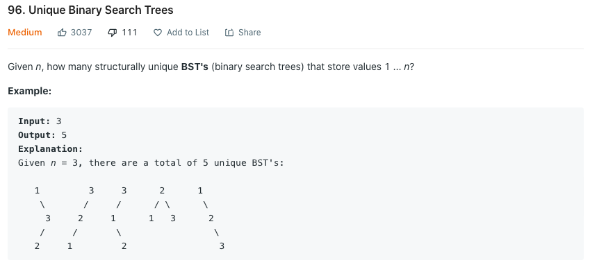
We need to define two functions: - G(n): the number of unique BST for a sequence of length n. - F(i, n), 1 <= i <= n: the number of unique BST, where the number i is the root of BST, and the sequence ranges from 1 to n.
So, G(n) = F(1, n) + F(2, n) + … + F(n, n). And G(0)=1, G(1)=1.
We found that: F(i, n) = G(i-1) * G(n-i).
Combining the above two formulas, we obtain the recursive formula for G(n). i.e.
So we start from G(2), G(2) = G(0) * G(1), G(3) = G(0) * G(2) + G(1) * G(1) + G(2) * G(0), …, finally we get G(n).
Firstly, I want to use 2D dp, but from the above solution, I found, we don’t care about the start point and end pint, we only care about the length of the sub-question. So we can only use 1D dp.
1 2 3 4 5 6 7
defsolution(n): dp = [0] * (n+1) dp[0] = dp[1] = 1 for i inrange(2, n+1): for j inrange(1, i+1): dp[i] += (dp[j-1]*dp[i-j]) return dp[-1]
isValidBST (post-order, dfs) O(n)
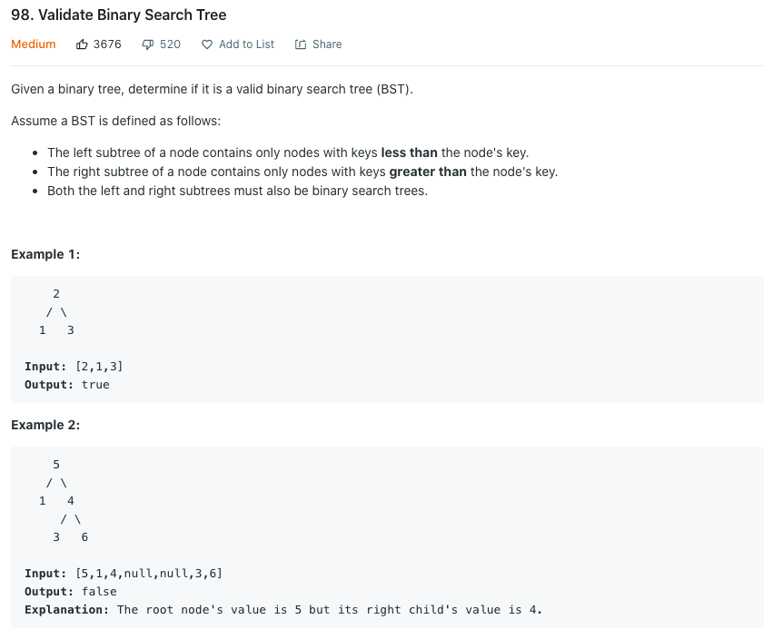
The first solution, we compare from down to up, we get the max and min value of each subtree. So, for a valid node, its value must larger than max value of left subtree and less than min value of right subtree.
The second solution, we compare from up to down, we set a range by two value: low bound and upper bound, each time we enter a left tree, we constrict the upper bound, and when we enter the right tree, we constrict the right bound.
while queue1 and queue2: node1 = queue1.pop(0) node2 = queue2.pop(0) ifnot node1 andnot node2: continue elif node1 and node2 and node1.val == node2.val: queue1.extend([node1.left, node1.right]) queue2.extend([node2.right, node2.left]) else: returnFalse ifnot queue1 andnot queue2: returnTrue else: returnFalse
(mark) buildTree (recursive) O(n)
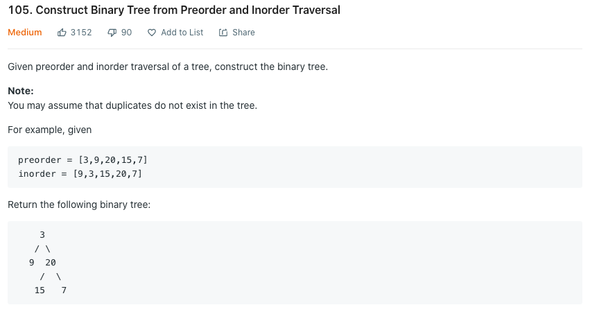
We found that the preorder indicates each root by the level order, and each root will recursively split the inorder into two part, its left and right subtree.
We use a dict to record the position of inorder in order to find the value quickly, then we define a function to construct the tree: def helper(start, end). Each time we give the function the range of its value in the inorder tree, then we recursively construct its left and right subtree as: - root.left = helper(start, idx-1) - root.right = helper(idx+1, end)
(if start > end, return None)
1 2 3 4 5 6 7 8 9 10 11 12 13 14 15
defsolution(preorder, inorder):
inorder_dict = {v: k for k, v inenumerate(inorder)}
Each time we find the deepest left node, and insert it to its parent node’s first right node, then we enter the right node to do the same thing.
1 2 3 4 5 6 7 8 9 10 11 12 13 14 15 16 17 18 19
defsolution(root): ifnot root: returnNone
defflatten(node): ifnot node.left andnot node.right: return node if node.left: # get the deepest left node to append to its first right node tmp_node = flatten(node.left) tmp_node.right = node.right # append it right to the deepest node's right node.right = node.left # append the top left to its right node.left = None if node.right: # return deepest right node return flatten(node.right)
flatten(root) return root
maxProfit (trick) O(n)
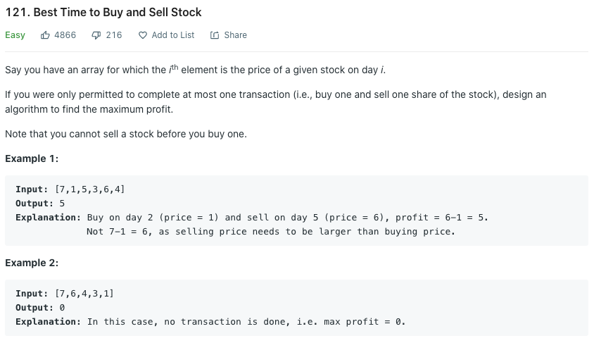
This problem is that, we want to find the tuple of [lowest, highest], and the highest value must appear after the lowest one. So we record the lowest, and each time we update: - lowest = min(lowest, prices[i]) - profit = max(profit, prices[i]-lowest)
1 2 3 4 5 6 7
defsolution(prices): cur_min = sys.maxsize max_profit = 0 for p in prices: cur_min = min(cur_min, p) max_profit = max(max_profit, p - cur_min) return max_profit
maxPathSum (tree dp) O(n)
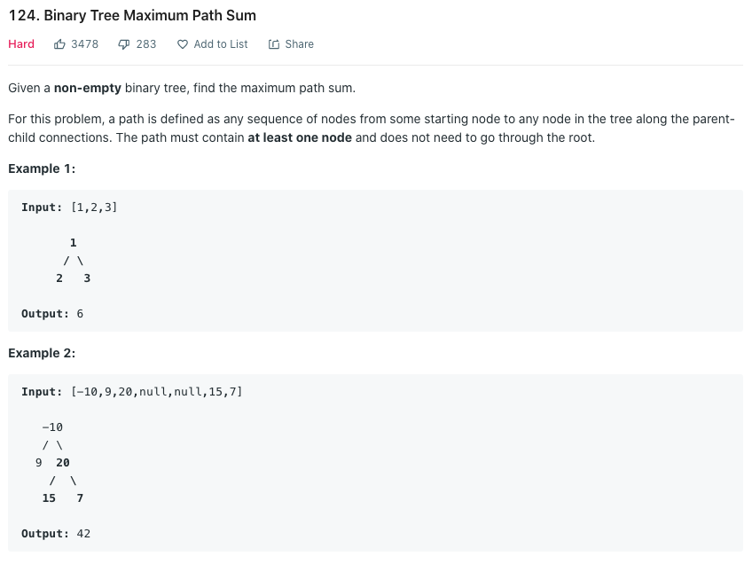
From the bottom to up, at each node, we calculate the max value from left and max value from right, we try to update the result = max(result, left_max+right_max+node.val), and for the return value, we return the max value from left_max+node.val and right_max+node.val, remember we need to compare with 0, since if the value less than 0, we actually delete it from the path.
1 2 3 4 5 6 7 8 9 10 11 12 13 14 15
defsolution(root): max_v = -sys.maxsize
defrecursive(root): nonlocal max_v ifnot root: return0 else: left = recursive(root.left) right = recursive(root.right) max_v = max(max_v, left + right + root.val) returnmax(left + root.val, right + root.val, 0)
recursive(root) return max_v
longestConsecutive (hash) O(n)
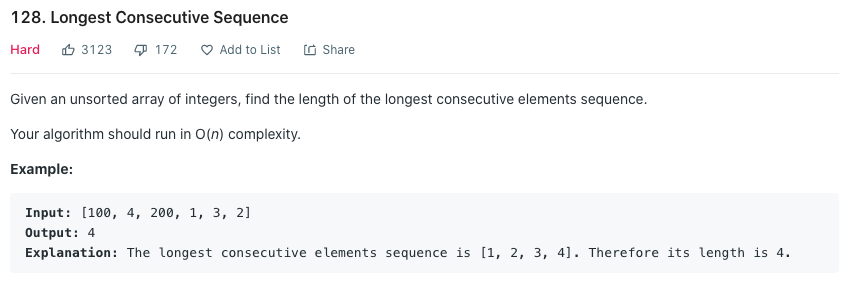
We convert the array to set(nums), when we iterate the array, we check whether the nums[i]-1 is in the array, if yes, skip. So once we found a smallest value, then try to check tmp_num+1 one by one, so we can get its consecutive length.
1 2 3 4 5 6 7 8 9 10 11 12 13
defsolution(nums): ifnot nums: return0 set_nums = set(nums) max_v = 0 for num in nums: if num - 1notin set_nums: count = 1 while num + 1in set_nums: num += 1 count += 1 max_v = max(max_v, count) return max_v
copyRandomList (hash) O(n)
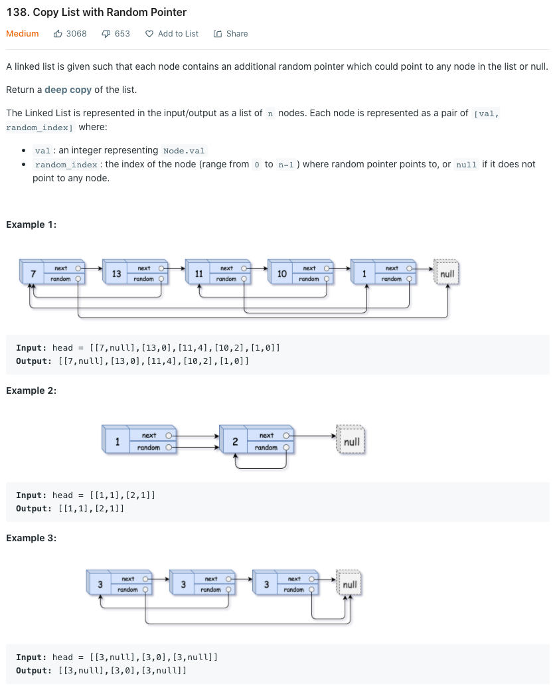
we using collections.defaultdict to store nodes which has been visited.
defbuild(node): ifnot node: returnNone _node = Node(node.val) node_dict[node] = _node if node.random: if node.random in node_dict: _node.random = node_dict[node.random] else: _node.random = build(node.random) if node.next: if node.nextin node_dict: _node.next = node_dict[node.next] else: _node.next = build(node.next) return _node
return build(head)
defsolution(head): ifnot head: returnNone
node_dict = defaultdict(Node)
_head = Node(head.val) node_dict[head] = _head ret_head = _head while head: if head.random: if head.random notin node_dict: node_dict[head.random] = Node(head.random.val) _head.random = node_dict[head.random] if head.next: if head.nextnotin node_dict: node_dict[head.next] = Node(head.next.val) _head.next = node_dict[head.next] head = head.next _head = _head.next
return ret_head
wordbreak (dp) O(mn)
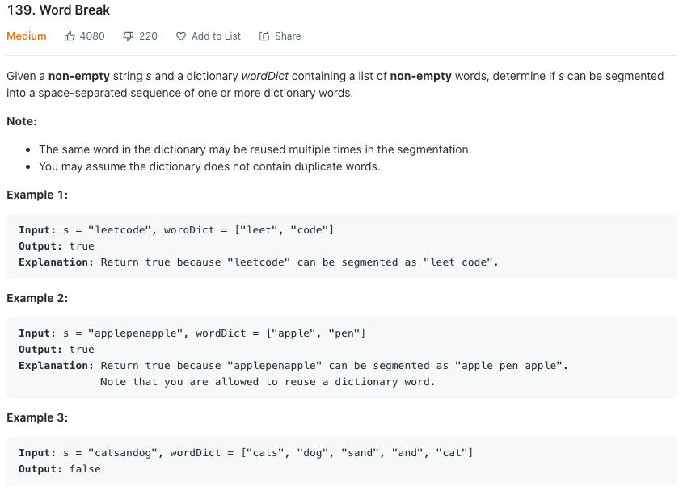
We set dp[i] as the result of s[0:i], and dp[i]=true if dp[i-len(w)] and s[i-len(w):i] == w.
1 2 3 4 5 6 7 8 9
defsolution(s, wordDict): n = len(s) dp = [False] * (n + 1) dp[0] = True for i inrange(1, n + 1): for w in wordDict: if i >= len(w) and dp[i - len(w)] and s[i - len(w):i] == w: dp[i] = True return dp[-1]
DetectCycle (trick) O(n)
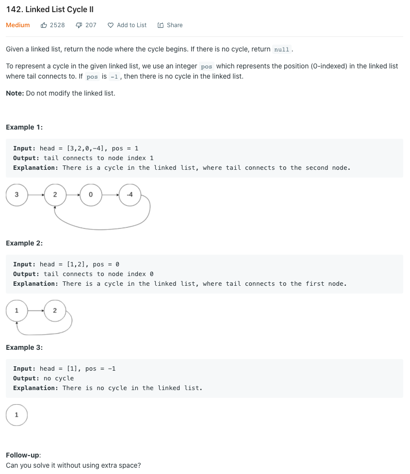
Let the distance from the first node to the node where cycle begins be A, and let say the slow pointer travels A+B. The fast pointer must travel 2A+2B to catch up. The cycle size is N. Full cycle is also how much faster pointer has traveled than slow pointer at meeting point. - A+B+N = 2A+2B - N=A+B
So once meet, we make another pointer start from head, we move slow pointer and this pointer together, once they meet, we found the beginning node. (because B+A=N).
1 2 3 4 5 6 7 8 9 10 11 12 13
defsolution(head): p = head q = head t = head while p and q and p.nextand q.nextand q.next.next: p = p.next.next q = q.next if q == p: while q != t: q = q.next t = t.next return t returnNone
LRUCache (double linked list) O(1)
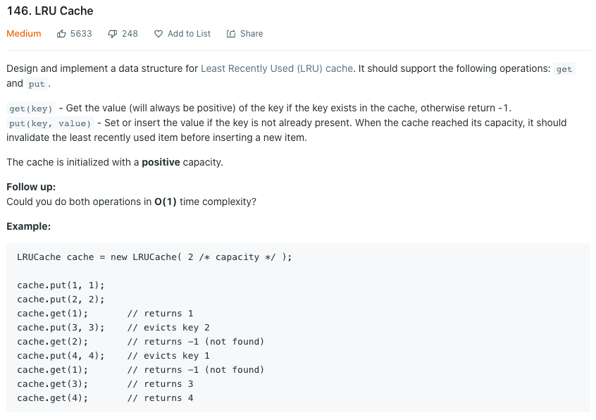
We use double linked list here, and we make two basic operations, called remove and add. The remove is, remove a node by its id from the list, and add is add a node to the end of the tail. - For the get operation, we firstly remove the node and then add. - For the put operation, we add it into the list and remove a node from the head.
defget(self, key): if key in self.dict: node = self.dict[key] self._remove(node) self._add(node) return node.val else: return -1
defput(self, key, value): if key in self.dict: self._remove(self.dict[key]) node = Node(key, value) self._add(node) self.dict[key] = node whilelen(self.dict) > self.capacity: tmp_node = self.head.next self._remove(tmp_node) del self.dict[tmp_node.key]
def_remove(self, node): p = node.pre n = node.next p.next = n n.pre = p def_add(self, node): p = self.tail.pre p.next = node node.pre = p node.next = self.tail self.tail.pre = node
SortList (merge sort or quick sort) O(nlogn)
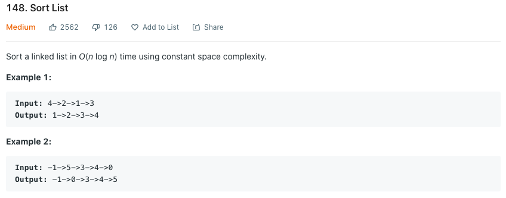
Using three list to store nodes, using head as the partition node, left_head stores the nodes whose value is less than partition node, right_head stores the nodes whose value is larger than partition node. partition_head stores the nodes whose value is equal with its value.
Then we recursive to call the sort function to sort left_head, right_head, at the final, we link these three lists together.
if left_head isnotNone: left_tail.next = middle_head.next else: left_head = middle_head if right_head isnotNone: middle_cur.next = right_head.next else: right_tail = middle_cur
return left_head, right_tail
head, _ = recursive(head) return head.next
(mark) maxProduct (greedy) O(n)
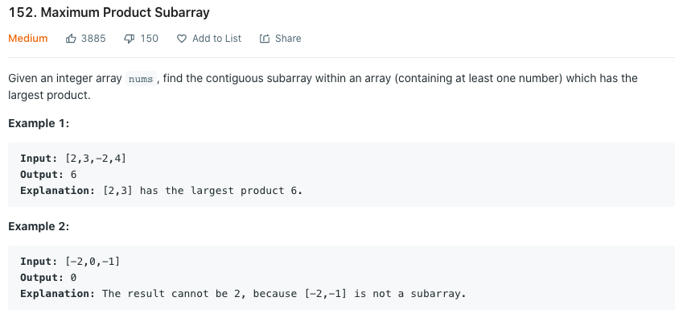
we record the min and max value together, each time, we compare and update these two values.
1 2 3 4 5 6
defsolution(nums): maximum = b = s = nums[0] for num in nums[1:]: b, s = max(num, b * num, s * num), min(num, b * num, s * num) maximum = max(maximum, b) return maximum
MinStack (trick) O(n)
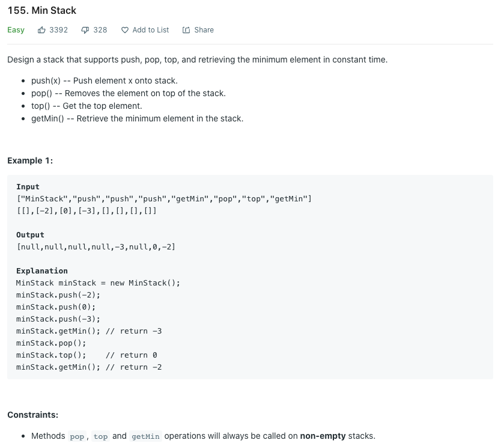
We use another stack to record the current min, each time we push a value, we compare it with the min[-1], if this valuer is larger, we duplicate min[-1], else we push value into the stack. And each time we need to pop a value, we also pop the min[-1].
Make two variable, value and count, once count=0, we make value=nums[i], and count+=1, if nums[i]==value, make count+=1, else count-=1.
1 2 3 4 5 6 7 8 9 10 11 12
defsolution(nums): cur_value = nums[0] cur_num = 1 for num in nums[1:]: if num != cur_value: cur_num -= 1 if cur_num == -1: cur_value = num cur_num = 1 else: cur_num += 1 return cur_value
Rob (dp) O(n)
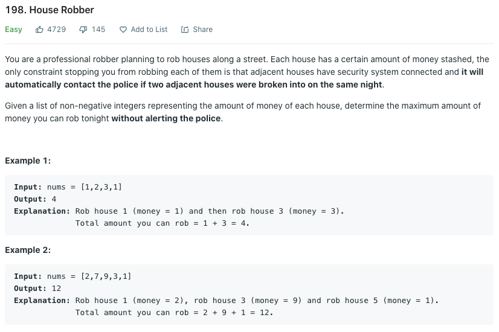
Solution 1: using two arary, max_rob, max_not_rob. max_rob[i] means the max value when we rob nums[i], and max_not_rob means the max value when we don’t rob nums[i]. - max_rob[i] = max_not_rob[i-1] + nums[i] - max_not_rob[i] = max(max_not_rob[i-1], max_rob[i-1])
defsolution(grid): ifnotlen(grid) ornotlen(grid[0]): return0 ret = 0 n = len(grid) m = len(grid[0]) for i inrange(n): for j inrange(m): if grid[i][j] == "1": grid[i][j] = "0" ret += 1 queue = [(i, j)] while queue: _i, _j = queue.pop(0) if _i > 0and grid[_i - 1][_j] == "1": grid[_i - 1][_j] = "0" queue.append((_i - 1, _j)) if _j > 0and grid[_i][_j - 1] == "1": grid[_i][_j - 1] = "0" queue.append((_i, _j - 1)) if _i < n - 1and grid[_i + 1][_j] == "1": grid[_i + 1][_j] = "0" queue.append((_i + 1, _j)) if _j < m - 1and grid[_i][_j + 1] == "1": grid[_i][_j + 1] = "0" queue.append((_i, _j + 1)) return ret
(mark) canFinish (dfs) O(n^3)
We set an array called visited to record which node has been visited. At the first, we set all visited[i]=0. When we recursively to search each node, we set its visited[i]=-1, once we’ve finished, we set it back to visited[i]=1. So, when the recursive function found a visited[i]=-1, return False, and visited[i]=1(avoid repeatedly search), return True.
def__init__(self, val): self.next = [None] * 26 self.val = val
classTrie(object):
def__init__(self): """ Initialize your data structure here. """ self.root = TrieNode(False)
definsert(self, word): """ Inserts a word into the trie. :type word: str :rtype: None """ node = self.root for w in word: idx = ord(w) - ord('a') ifnot node.next[idx]: node.next[idx] = TrieNode(False) node = node.next[idx] node.val = True
defsearch(self, word): """ Returns if the word is in the trie. :type word: str :rtype: bool """ node = self.root for w in word: idx = ord(w) - ord('a') ifnot node.next[idx]: returnFalse node = node.next[idx] return node.val
defstartsWith(self, prefix): """ Returns if there is any word in the trie that starts with the given prefix. :type prefix: str :rtype: bool """ node = self.root for w in prefix: idx = ord(w) - ord('a') ifnot node.next[idx]: returnFalse node = node.next[idx] returnTrue
The heap is easy. The quickselect is similar with quicksort, each time we select a pivot, and partition the array to two parts, if the len(left_part)=k-1, we return this pivot, else if larger, we continue to find k-th in the left_part, else, we found the k-len(left_part)-1-th at the right part.
# O(klogk+2(n-k)logk) defsolution(nums, k): import heapq k_heap = nums[0:k] heapq.heapify(k_heap) for i inrange(k, len(nums)): heapq.heappush(k_heap, nums[i]) heapq.heappop(k_heap) return heapq.heappop(k_heap)
# O(n) defsolution(nums, k):
defrecursive(nums, k): pivot = nums.pop(len(nums) // 2) right = [num for num in nums if num > pivot] lr = len(right) if k == lr + 1: return pivot elif k < lr + 1: return recursive(right, k) else: left = [num for num in nums if num <= pivot] return recursive(left, k - lr - 1)
defrecursive(root): if root: root.left, root.right = recursive(root.right), recursive(root.left) return root
return recursive(root)
isPalindrome (trick) O(n)
We use pointers, faster and slower, faster=faster.next.next, slow=slow.next. once we found he mid of the array, we reverse the half end of the list.
1 2 3 4 5 6 7 8 9 10 11 12 13 14 15 16 17 18 19
defsolution(head): rev = ListNode(None) fast = slow = head while fast and fast.next: fast = fast.next.next _slow = slow slow = slow.next _slow.next = rev.next rev.next = _slow if fast: slow = slow.next rev = rev.next while rev and slow: if rev.val != slow.val: returnFalse rev = rev.next slow = slow.next returnTrue
lowestCommonAncestor (recursive) O(n)
use postorder recursive, count = recusive(root.left, p, q) + recusive(root.right, p, q), if root.val ==p or ==q: cur_count ==1 else 0. If count+cur_count ==2, return the result.
1 2 3 4 5 6 7 8 9 10 11 12 13 14 15 16 17 18
defsolution(root, p, q): low_desc = None
defrecursive(root): nonlocal low_desc ifnot root: return0 ret = recursive(root.left) if ret < 2: ret += recursive(root.right) if root.val in (q.val, p.val): ret += 1 if ret == 2andnot low_desc: low_desc = root return ret
We use two arrays, the first to record the product of left values, and second to record the product of right values. Then result[i] = left[i] * right[i]
1 2 3 4 5 6 7 8 9 10 11 12
defsolution(nums): res = [1] * len(nums) p = 1 for i inrange(len(nums)): res[i] = p p *= nums[i]
right = 1 for i inrange(len(nums) - 1, -1, -1): res[i] *= right right *= nums[i] return res
maxSlidingWindow (trick) O(n)
Actually, we don’t need to re-calculate the max value each time. We use an array called result to record the max values. Each time: - If the new value is larger than current max value, we add it into the result array. - Else if the value will be deleted from the window is less than current max value, we add the current max value into the result again. - Else we re-calculate the max value within the window.
1 2 3 4 5 6 7 8 9 10 11 12 13
defsolution(nums, k): ifnot nums: return nums
ret = [max(nums[:k])] for i inrange(1, len(nums) - k + 1): if nums[i + k - 1] >= ret[-1]: ret.append(nums[i + k - 1]) elif nums[i - 1] < ret[-1]: ret.append(ret[-1]) else: ret.append(max(nums[i:i + k])) return ret
(mark) searchMatrix (trick) O(m+n)
At the first row, we search from the end, exclude the values which are larger than target, and we record the index, then at the second row, we search from the index to exclude again. We return True once we found the target, else we return False.
1 2 3 4 5 6 7 8 9 10
defsolution(matrix, target): iflen(matrix) == 0orlen(matrix[0]) == 0: returnFalse j = len(matrix[0]) - 1 for i inrange(len(matrix)): while j >= 0and matrix[i][j] > target: j -= 1 if matrix[i][j] == target: returnTrue returnFalse
numSquares (dp) O(n^1.5)
first we set search range(nums) is [1, floor(n^0.5)], then for dp[i]=min(dp[i-range[j]^2]+1) over all j.
1 2 3 4 5 6 7 8 9 10 11 12 13 14 15
import math, sys
defsolution(n): dp = [0] * (n + 1) squares = [i**2for i inrange(1, int(math.sqrt(n)) + 1)] dp[1] = 1 for i inrange(2, n + 1): min_v = sys.maxsize for j in squares: if i - j < 0: break min_v = min(min_v, dp[i - j]) dp[i] = min_v + 1 return dp[-1]
moveZeroes (trick) O(n)
Each time we encounter a non-zero value, we need to swap it with the first zero. So, we set an index to record the first zero’s position, if nums[i]!=0, we add one to this index, and swap nums[index] with nums[i], else we do nothing.
defsolution(nums): n = len(nums) if n == 0or n == 1: return nums i = 0 while i < n and nums[i] != 0: i += 1 j = i whileTrue: while j < n and nums[j] == 0: j += 1 if j >= n: break nums[i], nums[j] = nums[j], nums[i] i += 1
defsolution(nums): n = len(nums) if n == 0or n == 1: return nums i = 0 while i < n and nums[i] != 0: i += 1 for j inrange(i + 1, n): if nums[j] != 0: nums[i], nums[j] = nums[j], nums[i] i += 1
findDuplicate (trick) O(n)
We take this question as detectCycle, the number i will point to the nums[i], because there are multiply number are same, it means this number will point to a same number. And this number must be the start of the cycle.
1 2 3 4 5 6 7 8 9 10 11 12
defsolution(nums): slow = nums[0] fast = nums[nums[0]] while fast != slow: fast = nums[nums[fast]] slow = nums[slow] slow = 0 while slow != fast: slow = nums[slow] fast = nums[fast] return slow
MedianFinder (trick) O(nlogn)
Solution1: we maintain a sorted list, each time we using binary search to find the right position to insert the upcoming value.
Solution2: we use two heaps, large heap and small heap. Each time, if the length of the two heaps is equal, then we firstly add the value into the large heap, then we pop the smallest value from the large heap, and then add it into the small heap. If length not equal, we add the value into the small heap and pop the largest value then add it into the large heap. Finally, if the length is equal, we return the average of the values from top of small and large heaps. If equal, we return the value from the top of large heap.
defserialize(self, root): """Encodes a tree to a single string. :type root: TreeNode :rtype: str """ ifnot root: return'' out = [] queue = collections.deque([root]) while queue: node = queue.popleft() out.append(str(node.val) if node else'#') if node: queue.append(node.left) queue.append(node.right) return' '.join(out)
defdeserialize(self, data): """Decodes your encoded data to tree. :type data: str :rtype: TreeNode """ ifnot data: returnNone out = data.split() bfs = [TreeNode(int(i)) if i != '#'elseNonefor i in out] slow_idx = 0# the id in array nodex fast_idx = 1# the id in array bfs root = bfs[0] nodes = [root] while slow_idx < len(nodes): node = nodes[slow_idx] slow_idx += 1# each time we handle one node in nodes node.left = bfs[fast_idx] node.right = bfs[fast_idx + 1] fast_idx += 2# each time we only handle two nodes in bfs if node.left: nodes.append(node.left) if node.right: nodes.append(node.right) return root
lengthOfLIS(dp)
lengthOfLIS(dp) O(n^2)
The dp[i] stores the longest length till current position, each time we compare the current value with all previous values, if the current value is larger than a previous value, we record its dp value:
1 2 3 4 5 6 7 8 9 10 11 12
deflengthOfLIS(nums): iflen(nums) == 0: return0 dp = [0] * len(nums) dp[0] = 1 for i inrange(1, len(nums)): max_t = 0 for j inrange(0, i): if nums[i] > nums[j]: max_t = max(max_t, dp[j]) # # longest length till now plus current dp[i] = max_t + 1 returnmax(dp)
(mark) lengthOfLIS(dp) O(nlogn)
The dp[i] stores the increasing subsequence formed by including the currently encountered element.
For example, for input: [0, 8, 4, 12, 2],
We iterate each value in the input, each time we find the position in dp which value is the first one larger than current value in the input. For example, for 0, we have dp: [0]; for 8, we have dp: [0, 8]; for 4, we have dp: [0, 4]; then for 12, all values is smaller than 12, so we have append it at the end of dp: [0, 4, 12]; for 2, we have dp: [0, 2, 12]. The final dp is not the longest increasing subsequence, but length of dp array results in length of Longest Increasing Subsequence.
The reason why we update the value from [0, 4, 12] to [0, 2, 12], is 1, the update doesn’t break the feature of length of LIS, 2, once we encounter a value which is larger than 2, we update 12 then, so this makes sure we can find a longer LIS then.
# o(n^2) defsolution(nums): dp = [1] * len(nums) for i inrange(1, len(nums)): for j inrange(i): if nums[j] < nums[i]: dp[i] = max(dp[i], dp[j] + 1) returnmax(dp)
# O(n * logn) defsolution(nums): dp = [0] * len(nums) size = 0 for n in nums: i, j = 0, size while i != j: m = (i + j) // 2 if dp[m] < n: i = m + 1 else: j = m dp[i] = n size = max(size, i + 1) return size
removeInvalidParentheses(recursive) O(n^2)
We use a counter to check a string of parentheses is valid. The counter will increase when it is ‘(‘ and decrease when it is ‘)’. Whenever the counter is negative, we have more ‘)’ than ‘(‘ in the prefix.
To make the prefix valid, we need to remove a ‘)’. The problem is: which one? The answer is any one in the prefix. However, if we remove any one, we will generate duplicate results, for example: s = ()), we can remove s[1] or s[2] but the result is the same (). Thus, we restrict ourselves to remove the first ‘)’ in a series of consecutive ‘)’s.
After the removal, the prefix is then valid. We then call the function recursively to solve the rest of the string. However, we need to keep another information: the last removal position. If we do not have this position, we will generate duplicate by removing two ‘)’ in two steps only with a different order.
For this, we keep tracking the last removal position and only remove ‘)’ after that. So, we need two flags, the first i means till i the string is valid, and j means we should start removing ‘)’ from j. And for ‘)’ between i and j, we call recursive function to remove every ‘)’.
Now one may ask. What about ‘(‘? What if s = ‘(()(()’ in which we need remove ‘(‘?
The answer is: do the same from right to left.
However, a cleverer idea is: reverse the string and reuse the code!
defremoveInvalidParentheses(self, s): """ :type s: str :rtype: List[str] """ defremoveHelper(s, output, iStart, jStart, openParen, closedParen): numOpenParen, numClosedParen = 0, 0 for i inrange(iStart, len(s)): if s[i] == openParen: numOpenParen += 1 if s[i] == closedParen: numClosedParen += 1 # We have only ONE extra closed paren we need to remove if numClosedParen > numOpenParen: print(s) if openParen == '(': print("positive") elif openParen == ')': print('negative') print("i=", i, numOpenParen, numClosedParen) # Try removing this ONE closed paren at each position, skipping duplicates print(jStart, i) # jStart: always to search the first closedParen which can be removed for j inrange(jStart, i+1): # <= # can be the first char, # or the char which previous char isn't closedParen, removing each one of the consequtive closedParen actually is the same if s[j] == closedParen and (j == jStart or s[j-1] != closedParen): # since when j == jStart, there isn't j-1 # Recursion: iStart = i since we now have valid # closed parenthesis thru i. jStart = j prevents duplicates # at the next recursion, we only need to search the iStart from the current i, and search the jStart from the current j # since we found the first invalid closedParen at the i, and we have removed a closedParen at j print("remove, j=", j, s[j]) removeHelper(s[:j]+s[j+1:], output, i, j, openParen, closedParen) return reversed = s[::-1] print(reversed, "now out of the loop") if openParen == '(': removeHelper(reversed, output, 0, 0, ')', '(') else: output.append(reversed)
We use stack [n][3], stack[i][0] records colldown action, stack[i][1] records buy action, stack[i][0] records sell action. - For cooldown, we keep the largest profit from the previous day: stack[i][0] = max(stack[i-1]). - For buy, we only consider the previous cooldown action, stack[i][1] = stack[i-1][0] - prices[i]. The [buy, cooldown, buy] action will not occur, since the previous cooldown is got from the largest actions(stack[i][0] = max(stack[i-1])). - For sell, stack[i][2] = bought + prices[i]. And we record a bought value each time, bought = max(bought, stack[i][1]), so each time we keep the max bought which means the samllest cost bought.
we record the bought to avoid the [sell, rest, sell], each time we keep the max bought which means the samllest cost bought
1 2 3 4 5 6 7 8 9 10 11 12
defsolution(prices): ifnot prices: return0 n = len(prices) buy, sell, cooldown = [0] * n, [0] * n, [0] * n bought = buy[0] = -prices[0] for i inrange(1, n): buy[i] = cooldown[i - 1] - prices[i] sell[i] = bought + prices[i] cooldown[i] = max(buy[i - 1], sell[i - 1], cooldown[i - 1]) bought = max(bought, buy[i]) returnmax(buy[-1], sell[-1], cooldown[-1])
maxCoins(dp) O(n^3)
First of all, dp[i][j] means, the maximum coins we get after we burst all the balloons between i and j in the original array. So dp[i][j] means we already burst all balloons between i and j. For the transition function:
1 2
for k in range(i+1, j): coins = max(coins, nums[i]*nums[k]*nums[j] + recursion(i, k) + recursion(k, j))
This transition function basically says in order to get the maximum value we can get for bursting all the balloons between [ i , j] , we just loop through each balloon between these two indexes and make them to be the last balloon to be burst, which means we already burst all balloons from left to k-1, and from k+1 to right. 72 Notes: we append 1 to the start and end of input, each time we handle the solution from i+1 to j. we actually skep the first and last items. This trick assures the equation is correct: nums[i]*nums[k]*nums[j].
1 2 3 4 5 6 7 8 9 10 11 12 13 14 15 16 17 18
defsolution(nums): nums = [1] + nums + [1] n = len(nums) dp = [[0] * n for _ inrange(n)]
defrecursive(i, j): if dp[i][j] or j == i + 1: return dp[i][j] coins = 0 for k inrange(i + 1, j): # we firstly burst (i,k) and (k,j), only leave (i,k,j) three ballons coins = max( coins, nums[i] * nums[k] * nums[j] + recursive(i, k) + recursive(k, j)) dp[i][j] = coins return coins
just like shift one bit to left and add the remainder.
1 2 3 4 5
defsolution(num): dp = [0] * (num + 1) for i inrange(1, num + 1): dp[i] = dp[i // 2] + i % 2 return dp
topKFrequent(heap) O(nlogn)
1 2 3 4 5 6 7 8 9 10 11 12 13 14 15 16 17
from collections import defaultdict import heapq
defsolution(nums, k): hash_map = defaultdict(int) for num in nums: hash_map[num] += 1 ret = [] i = 0 for key, val in hash_map.items(): if i < k: heapq.heappush(ret, (val, key)) else: heapq.heappushpop(ret, (val, key)) i += 1 return [v for k, v in ret]
decodeString(stack) O(n)
We use a stack to record chars. Each time we have a ‘]’, we pop and record the chars until the ‘[’, then we continue to find all digital chars, and get handle then to get a 10-based value to repeat the chars we recorded between ‘[’ and ‘]’.
1 2 3 4 5 6 7 8 9 10 11 12 13 14 15 16
defsolution(s): stack = [""] num = "" for c in s: if c.isdigit(): num += c elif c == "[": stack.extend([num, ""]) num = "" elif c == "]": chars = stack.pop() n_chars = stack.pop() stack[-1] += chars * int(n_chars) else: stack[-1] += c return stack.pop()
reconstructQueue(trick) O(nlog)
First we order the list by, people = sorted(people, key=lambda x: (-x[0], x[1])), the descending order of the first element and ascending value by the second element.
Then we inset the tuple by the index of second element: result.insert(p[1], p).
The reason behind this is, the tuple’s order only be affected by the tuple which is larger than it. So we first to handle the larger tuple. Then, for the second element, we insert it by ascending order to keep the result valid.
1 2 3 4 5 6
defsolution(people): people = sorted(people, key=lambda x: (-x[0], x[1])) ret = [] for p in people: ret.insert(p[1], p) return ret
canPartition
canPartition(dp) O(n*s), n<=200, s<=10000
We make a matrix with n*s, n is the number of the input, and s is the sum(input)//2. For a cell in the matrix, for example, for i-th row and j-th column, it mean with input[:i], can we get sum value of j. so, the process as following: - We make all dp[i][nums[i]-1] = 1 for i in range(m). it means other values are not selected, only the i-th value’s sum. - And when we iterate fo i from 1 to m and j from 0 to s. dp[i-1][j] == dp[i][j] means when current value is not selected, the sum we get.. And dp[i][j] = dp[i-1][j-nums[i]] means when current value is selected, the sum we get.
Partition(dp) O(2^n with cutting branch)
just reclusively call helper(nums[i+1:], target-num) for i, num in enumerate(nums)
nums = sorted(nums, reverse=True) dp[0][nums[0]] = True for i inrange(1, len(nums)): dp[i][nums[i]] = True for j inrange(scale - 1, 0, -1): if dp[i - 1][j]: dp[i][j] = True if j > nums[i] and dp[i - 1][j - nums[i]]: dp[i][j] = True if dp[i][-1]: returnTrue return dp[-1][-1]
defsolution(nums):
defrecursive(nums, target): for i, num inenumerate(nums): if num > target: returnFalse elif num == target: returnTrue elif recursive(nums[i + 1:], target - nums[i]): returnTrue returnFalse
We assume all paths are from root, then there is an old path called oldPathsum, when we continue to go down the tree, we have a new path called currPathSum, once oldPathsum = currPathSum – target, we found a path, so we result += cache.get(oldPathsum, 0).
Note, when we enter a node, we make cache[currPathSum] = cache.get(currPathSum, 0) + 1, and then we iterate its children, and once we leave this node, we make cache[currPathSum] -= 1.
1 2 3 4 5 6 7 8 9 10 11 12 13 14 15 16
defsolution(root, target):
defrecursive(root, cur_sum): if root: nonlocal ret cur_sum += root.val ret += cache.get(cur_sum - target, 0) cache[cur_sum] = cache.get(cur_sum, 0) + 1 recursive(root.left, cur_sum) recursive(root.right, cur_sum) cache[cur_sum] -= 1
ret = 0 cache = {0: 1} recursive(root, 0) return ret
findAnagrams(cache) O(n)
Using a 26 sized cache to stores the current frequency of substring. Each time we slide the window to update the cache and compare it with the cache of target.
defsolution(s, p): import collections ret = [] p_counter = collections.Counter(p) s_counter = collections.Counter(s[:len(p) - 1]) for i inrange(len(p) - 1, len(s)): s_counter[s[i]] += 1 pre_i = i - len(p) + 1 if s_counter == p_counter: ret.append(pre_i) s_counter[s[pre_i]] -= 1 if s_counter[s[pre_i]] == 0: del s_counter[s[pre_i]] return ret
defsolution(s, p): l = len(p) p_frequency = [0] * 26 ss_frequency = [0] * 26 res = [] for c in p: p_frequency[ord(c) - 97] += 1 for c in s[0:l]: ss_frequency[ord(c) - 97] += 1 if p_frequency == ss_frequency: res.append(0)
for i inrange(1, len(s) - l + 1): ss_frequency[ord(s[i - 1]) - 97] -= 1 ss_frequency[ord(s[i + l - 1]) - 97] += 1 if p_frequency == ss_frequency: res.append(i)
return res
findDisappearedNumbers(trick) (n)
We iterate the array, to mark the seen position as negative.
1 2 3 4 5 6 7 8 9 10 11 12
defsolution(nums): n = len(nums) for i inrange(n): _num = abs(nums[i]) if _num <= n: nums[_num - 1] = -abs(nums[_num - 1])
ret = [] for i inrange(n): if nums[i] > 0: ret.append(i + 1) return ret
findTargetSumWays(dp) O(n*2s) s=sum(nums)
the matrix of dp is dp[0:n][-s:s], for row is 0, we take dp[0][+-nums[0]] =1, and then for later rows, dp[i][j] = dp[i][j-nums[i]] + dp[i][j+nums[i]].
1 2 3 4 5 6 7 8 9 10 11 12 13 14 15 16 17
defsolution(nums, S): sum_v = sum(nums) if sum_v < S: return0 n = len(nums) dp = [0] * (2 * sum_v + 1) dp[nums[0]] += 1 dp[-nums[0]] += 1 for n in nums[1:]: _dp = [0] * (2 * sum_v + 1) for i inrange(-sum_v, sum_v + 1): if i + n <= sum_v: _dp[i] += dp[i + n] if i - n >= -sum_v: _dp[i] += dp[i - n] dp = _dp return dp[S]
diameterOfBinaryTree(tree dp) (n)
From the leave, at each parent, we update the result = max(result, a+b+1), a is the longest length from left, b is from right. Then we transfer max(a, b) to this parent as its longest length.
1 2 3 4 5 6 7 8 9 10 11 12 13 14 15
defsolution(root):
defrecusive(root): nonlocal ret ifnot root: return0, 0
l = recusive(root.left) r = recusive(root.right) ret = max(ret, max(l) + max(r)) returnmax(l) + 1, max(r) + 1
# O(n^2) defsolution(nums, k): n = len(nums) ret = 0 dp = [[0] * (n + 1) for _ inrange(n)] # (start_pos, len) for i inrange(1, n + 1): for j inrange(0, n - i + 1): if i == 1: dp[j][i] = nums[j] else: dp[j][i] = nums[j] + dp[j + 1][i - 1] if dp[j][i] == k: ret += 1 return ret
# O(n) defsolution(nums, k): cache = {0: 1} cur_sum = 0 ret = 0 for n in nums: cur_sum += n ret += cache.get(cur_sum - k, 0) cache[cur_sum] = cache.get(cur_sum, 0) + 1 return ret
findUnsortedSubarray(trick) O(n)
We firstly iterate from left, each time, we store the current max value, and once we found the current value is smaller than the current max value, we mark it position. Then we iterate from right using min value to do again. Finally the result is max(right-left+1, 0).
1 2 3 4 5 6 7 8 9 10 11 12 13 14 15 16 17 18 19
defsolution(nums): n = len(nums) if n <= 1: return0 right = 0 cur_max = nums[0] for i inrange(1, n): if nums[i] < cur_max: right = i cur_max = max(cur_max, nums[i])
cur_min = nums[-1] left = len(nums)-1 for i inrange(n - 2, -1, -1): if nums[i] > cur_min: left = i cur_min = min(cur_min, nums[i]) returnmax(right - left + 1, 0)
defsolution(tasks, n): cache = [0] * 26 for c in tasks: cache[ord(c) - ord('A')] += 1 cache.sort(reverse=True) max_v = cache[0] - 1 idle_slots = max_v * n for i inrange(1, len(cache)): if cache[i] == 0: break idle_slots -= min(cache[i], max_v) return idle_slots + len(tasks) if idle_slots > 0elselen(tasks)
countSubstrings
countSubstrings() O(n^2)
1 2 3 4 5 6 7 8 9 10 11 12 13
n = len(s) if n <= 1: return n dp = [[0] * (n + 1) for _ inrange(n)] # (start_pos, len) ret = 0 for i inrange(1, n + 1): for j inrange(0, n - i + 1): if i == 1or (i == 2and s[j] == s[j + 1]) or (s[j] == s[j + i - 1] and dp[j + 1][i - 2]): dp[j][i] = 1 ret += 1 return ret
countSubstrings(Manacher’s Algorithm?) O(n)
dailyTemperatures(stack) O(n)
We use a stack to store the values. We push the value which is smaller than then top item of stack. Once we have a value which is larger than top item, we pop all values which are smaller than the current value and mark the result as [current position – item position].
1 2 3 4 5 6 7 8 9 10 11
defsolution(T): ret = [0] * len(T) stack = [(T[0], 0)] for i inrange(1, len(T)): top = stack[-1] if T[i] > top[0]: while stack and T[i] > stack[-1][0]: _t = stack.pop() ret[_t[1]] = i - _t[1] stack.append((T[i], i)) return ret